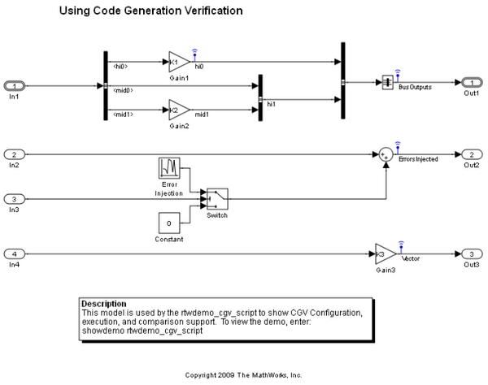
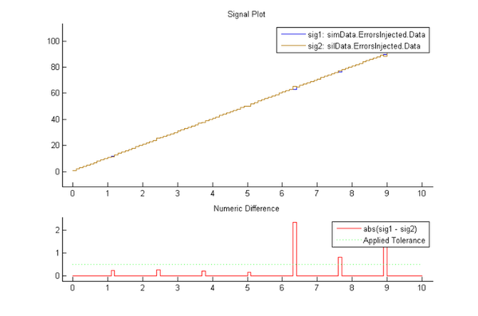
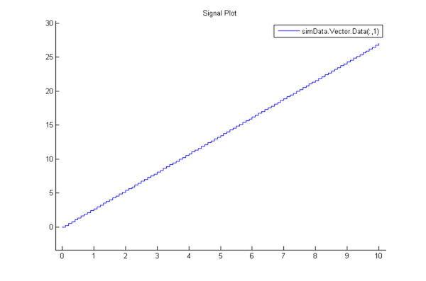

コード生成検証の使用
このデモでは、ノーマル モードおよびソフトウェアインザループ (SIL) モードのシミュレーションでモデルを設定、実行、および比較する方法を説明し、コード生成検証 (CGV) 機能を示します。プロセッサーインザループ (PIL) モードも使用できます。
目次
デモ モデルについて
rtwdemo_cgv モデルでは、バス、スカラー、およびベクトル化されたデータを使用し、テスト実行の間で異なる結果が生じるようにエラーを挿入します。モデルを開くには、MATLAB コマンド ウィンドウで次のコマンドを入力します。
cgvModel = 'rtwdemo_cgv';
close_system(cgvModel,0);
open_system( cgvModel);
 このモデルの最上位には階層状のバスがあり、3 つのバスが入れ子にされています。このバスの配列により、最初に記録された出力で複雑な階層状のデータが生成されます。このモデルでは、2 番目の出力で一定の間隔で信号にエラーが挿入されます。これらのエラーにより、2 回のテスト実行の間で確実に異なる結果が生成され、比較コードのデモがさらにわかりやすくなります。3 番目の出力では、信号はサンプルごとに 4 つの値からなるベクトルです。この主な目的は、比較のサポートを示すことです。
メモ:このデモでコードを実行する前に、書き込み可能なディレクトリに移動します。それには、次のようにコードを入力します。
baseVars = who; % For future cleanup. OriginalFolder = pwd; cd (tempdir); save_system( cgvModel, fullfile( pwd, cgvModel)); % Save to the working directory close_system( cgvModel, 0); % Avoid having the saved model shadowed by the original
モデル設定の確認
CGV では、SIL または PIL 環境で ert ターゲットとして実行するために、モデルに適切な設定が指定されていることを確認するためのヘルパー クラスを提供しています。たとえば、rtwdemo_cgv モデルは 32 ビット プロセッサーのワード サイズで保存されます。したがって、64 ビット マシンでモデルを実行すると、cgv.Config では、64 ビット プロセッサーのワード サイズの設定が変更されます。モデルが変更された場合、'Savemodel' パラメーターはモデルを保存します。
cgvCfg = cgv.Config( cgvModel, 'Connectivity', 'sil', 'Savemodel', 'on'); cgvCfg.configModel(); cgvCfg.displayReport();
For model rtwdemo_cgv: configuration parameter 'ProdEqTarget', previous value 'on', current value 'off'. For model rtwdemo_cgv: configuration parameter 'TargetEndianess', previous value 'LittleEndian', current value 'LittleEndian'. For model rtwdemo_cgv: configuration parameter 'TargetHWDeviceType', previous value 'Specified', current value 'Generic->MATLAB Host Computer'. For model rtwdemo_cgv: configuration parameter 'TargetIntDivRoundTo', previous value 'Zero', current value 'Zero'.
モデルが変更された場合、displayReport は変更内容を報告し、'Savemodel' は変更内容を保存します。このモデルを 32 ビットシステムで実行する場合、変更が不要になる可能性が高くなります。
CGV での実行
CGV では、モデルは ノーマル と SIL の 2 つのシミュレーション モードで実行されます。どちらの場合も、CGV オブジェクトが出力データを取得して、ファイルに書き込みます。詳細は、CGV のドキュメンテーションを参照してください。このモデルをノーマル モードと SIL シミュレーション モードで実行するには、次のように入力します。
cgvSim = cgv.CGV( cgvModel, 'Connectivity', 'sim'); cgvSim.addInputData(1, [cgvModel '_data']); % This next CGV function, addPostLoadFiles(), allows you to specify MATLAB % programs to execute, or mat-files to load, before execution of the model. cgvSim.addPostLoadFiles({[cgvModel '_init.m']}); cgvSim.setOutputDir('cgv_output'); result1 = cgvSim.run(); cgvSil = cgv.CGV( cgvModel, 'Connectivity', 'sil'); cgvSil.addInputData(1, [cgvModel '_data']); cgvSil.addPostLoadFiles({[cgvModel '_init.m']}); cgvSil.setOutputDir('cgv_output'); result2 = cgvSil.run();
Applying PostLoad file: rtwdemo_cgv_init.m Starting execution: ComponentType: topmodel Connectivity: sim InputData: rtwdemo_cgv_data.mat End CGV execution: status completed Applying PostLoad file: rtwdemo_cgv_init.m Starting execution: ComponentType: topmodel Connectivity: sil InputData: rtwdemo_cgv_data.mat ### Starting Real-Time Workshop build procedure for model: rtwdemo_cgv ### Successful completion of Real-Time Workshop build procedure for model: rtwdemo_cgv ### Preparing to start SIL simulation ... ### Starting SIL simulation for component: rtwdemo_cgv ### Stopping SIL simulation for component: rtwdemo_cgv End CGV execution: status completed
関数の実行に成功すると、boolean 値 true が返されます。 データにアクセスする前に、ノーマル モードと SIL モードの両方のシミュレーションの結果を確認してください。 実行に失敗することはありませんが、正確を期すために、常に確認することをお勧めします。 エラーが発生した場合、CGV はそのエラーを報告します。
if ~result1 || ~result2 error('Execution of model failed.'); end simData = cgvSim.getOutputData(1); silData = cgvSil.getOutputData(1);
結果の比較
これで、両方のテスト実行が完了しました。結果を比較します。比較コードでは、フィルターを使用したプロットがサポートされています。それぞれのデータを示すプロットが表示されます。1 つのプロットを表示する場合は、差分データが表示されます。
CGV ヘルパー関数では、すべての信号名の表示 (コマンド ウィンドウで使用される) を挿入し、許容誤差情報を信号名に関連付けるファイルを作成します。
ノーマル モードのシミュレーションから取得された信号名の表示
保存されたデータから取得された信号名のリストを表示します。
cgv.CGV.getSavedSignals( simData);
simData.hi0.Data(:,1) simData.hi0.Data(:,2) simData.Vector.Data(:,1) simData.Vector.Data(:,2) simData.Vector.Data(:,3) simData.Vector.Data(:,4) simData.BusOutputs.hi0.Data(:,1) simData.BusOutputs.hi0.Data(:,2) simData.BusOutputs.hi1.mid0.lo0.Data(1,1,:) simData.BusOutputs.hi1.mid0.lo0.Data(2,1,:) simData.BusOutputs.hi1.mid0.lo0.Data(1,2,:) simData.BusOutputs.hi1.mid0.lo0.Data(2,2,:) simData.BusOutputs.hi1.mid0.lo1.Data simData.BusOutputs.hi1.mid0.lo2.Data simData.BusOutputs.hi1.mid1.Data(:,1) simData.BusOutputs.hi1.mid1.Data(:,2) simData.ErrorsInjected.Data
メモ:cgv.CGV.compare は、一方のモードのデータ セットにのみ現れる信号を無視します。たとえば、ノーマル モードのシミュレーションの出力に現れる記録された内部信号が、SIL モードのシミュレーションの出力に現れない場合、比較コードは無視します。したがって、simData.hi0.Data 信号は silData に現れないので、それ以上比較されません。
許容誤差ファイルの作成
関数 CGV createToleranceFile では、許容誤差情報を信号名に関連付けるファイルを作成します。許容誤差の設定に使用できるオプションについては、cgv.CGV.createToleranceFile を参照してください。既定の設定では、許容誤差はゼロです。したがって、信号は完全に一致しなければなりません。この例では、ErrorsInjected 信号に対してデルタ値 0.5 が許容されます。
signalList = {'simData.ErrorsInjected.Data' };
toleranceList = { { 'absolute', 0.5}};
cgv.CGV.createToleranceFile( 'localtol', signalList, toleranceList );
すべての信号の比較
既定の設定では、関数 ｃgv.CGV.compare は両方の実行の間で共通する名前を持つすべての信号を調べます。 信号 simData.ErrorsInjected.Data での不一致に基づいてプロットが生成されます。
比較関数の 2 番目と 4 番目の戻りパラメーターは、一致した信号の数と一致しなかった信号の数を示します。 この例では戻り値を使用していないので、チルダ (~) はこれらのパラメーターを示します。
[matchNames, ~, mismatchNames, ~] = ... cgv.CGV.compare( simData, silData, 'Plot', 'mismatch', ... 'Tolerancefile', 'localtol'); fprintf( '%d Signals match, %d Signals mismatch\n', ... length(matchNames), length(mismatchNames)); disp( 'Mismatched Signal Names:'); disp(mismatchNames);
14 Signals match, 1 Signals mismatch
Mismatched Signal Names:
'simData.ErrorsInjected.Data'
 個々の信号の比較
関数 cgv.CGV.compare では、指定した信号のみを比較し、残りの信号を無視することも可能です。 次の例では、この関数で 3 つの信号のみを比較しています。
[matchNames, ~, mismatchNames, ~ ] = ... cgv.CGV.compare( simData, silData, 'Plot', 'mismatch', ... 'Signals', {'simData.BusOutputs.hi1.mid0.lo1.Data', 'simData.BusOutputs.hi1.mid0.lo2.Data', ... 'simData.Vector.Data(:,3)'}); fprintf( '%d Signals match, %d Signals mismatch\n', ... length(matchNames), length(mismatchNames)); if ~isempty(mismatchNames) disp( 'Mismatched Signal Names:'); disp(mismatchNames); end
3 Signals match, 0 Signals mismatch
追加のプロット作成のサポート
比較関数によって出力されるプロットと同じ形式で信号の一覧のプロットを作成するには、cgv.CGV.plot を呼び出します。 以下に例を示します。
[signalNames, signalFigures] = cgv.CGV.plot( simData, ... 'Signals', {'simData.Vector.Data(:,1)'});
ワークスペースのクリア
このデモで作成した多くの変数をワークスペースからクリアするには、次のようにコードを入力します。
cd (OriginalFolder); newBaseVars = who; addedVars = setdiff( newBaseVars, baseVars); clearCmd = ['clear ' sprintf( '%s ', addedVars{:})]; eval( clearCmd); clear newBaseVars addedVars clearCmd
詳細情報
SIL と PIL の詳細は、rtwdemo_sil_pil を参照してください。